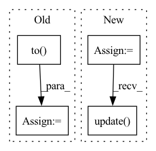

Pattern ID :3035
Before Change
wandb.log({"train/loss": loss.item()})
if (i+1) % args.sample_freq == 0:
model.eval()
dec = decoder.generate(torch.LongTensor([args.bos_token]*len(encoded[:args.test_samples]))[:, None].to( device) , args.max_seq_len,
eos_token=args.pad_token, context=encoded.detach()[:args.test_samples])
pred = token2str(dec[:args.test_samples], dataloader.tokenizer)
truth = token2str(seq["input_ids"], dataloader.tokenizer)
if args.wandb:
table = wandb.Table(columns=["Truth", "Prediction"])After Change
dataloader = Im2LatexDataset().load(args.data)
dataloader.update(**args)
valdataloader = Im2LatexDataset().load(args.valdata)
valargs = args.copy()
valargs.update(batchsize=args.testbatchsize, keep_smaller_batches=True)
valdataloader.update(**valargs)
device = args.device
model = get_model(args)In pattern: SUPERPATTERN
Frequency: 3
Non-data size: 4
Instances Fragment ID: 11757299
Project Name: lukas-blecher/latex-ocr
Commit Name: d52e43388fd9c01f33b5e03bcccbba0a0c8e51b5
Time: 2021-02-15
Author: luk.blecher@gmx.de
File Name: train.py
M Class Name: AnonimousClass
N Class Name: AnonimousClass
M Method Name: train(1)
N Method Name: train(1)
M Parent Class:
N Parent Class:
M File Name: train.py
N File Name: train.py
M Start Line: 21
M End Line: 61
N Start Line: 24
N End Line: 54
Before Change
domain_accs_D.update(domain_adv_D.domain_discriminator_accuracy, x_s.size(0))
domain_accs_D_0.update(domain_adv_D_0.domain_discriminator_accuracy, x_s.size(0))
labels_in_target = torch.FloatTensor([c in target_idxes for c in labels_s]).to( device)
labels_in_target_num = labels_in_target.sum()
if labels_in_target_num != 0:
avg_importance = (weight.squeeze() * labels_in_target / labels_in_target_num).sum()
importance_weights.update(avg_importance.item(), int(labels_in_target_num.item()))After Change
domain_accs_D = AverageMeter("Domain Acc for D", ":3.1f")
domain_accs_D_0 = AverageMeter("Domain Acc for D_0", ":3.1f")
partial_classes_weights = AverageMeter("Partial Weight", ":3.2f")
non_partial_classes_weights = AverageMeter("Non-Partial Weight", ":3.2f")
progress = ProgressMeter(
args.iters_per_epoch,
[batch_time, data_time, losses, cls_accs, tgt_accs,
domain_accs_D, domain_accs_D_0, partial_classes_weights, non_partial_classes_weights],
prefix="Epoch: [{}]".format(epoch))
// switch to train mode
model.train()
domain_adv_D.train()
domain_adv_D_0.train()
end = time.time()
for i in range(args.iters_per_epoch):
x_s, labels_s = next(train_source_iter)
x_t, labels_t = next(train_target_iter)
x_s = x_s.to(device)
x_t = x_t.to(device)
labels_s = labels_s.to(device)
labels_t = labels_t.to(device)
// measure data loading time
data_time.update(time.time() - end)
// compute output
x = torch.cat((x_s, x_t), dim=0)
y, f = model(x)
y_s, y_t = y.chunk(2, dim=0)
f_s, f_t = f.chunk(2, dim=0)
// classification loss
cls_loss = F.cross_entropy(y_s, labels_s)
// domain adversarial loss for D
adv_loss_D = domain_adv_D(f_s.detach(), f_t.detach())
// get importance weights
w_s = importance_weight_module.get_importance_weight(f_s)
// domain adversarial loss for D_0
adv_loss_D_0 = domain_adv_D_0(f_s, f_t, w_s=w_s)
// entropy loss
y_t = F.softmax(y_t, dim=1)
entropy_loss = entropy(y_t, reduction="mean")
loss = cls_loss + 1.5 * args.trade_off * adv_loss_D + \
args.trade_off * adv_loss_D_0 + args.gamma * entropy_loss
// compute gradient and do SGD step
optimizer.zero_grad()
loss.backward()
optimizer.step()
lr_scheduler.step()
cls_acc = accuracy(y_s, labels_s)[0]
tgt_acc = accuracy(y_t, labels_t)[0]
losses.update(loss.item(), x_s.size(0))
cls_accs.update(cls_acc.item(), x_s.size(0))
tgt_accs.update(tgt_acc.item(), x_s.size(0))
domain_accs_D.update(domain_adv_D.domain_discriminator_accuracy, x_s.size(0))
domain_accs_D_0.update(domain_adv_D_0.domain_discriminator_accuracy, x_s.size(0))
// debug: output class weight averaged on the partial classes and non-partial classes respectively
partial_class_weight, non_partial_classes_weight = \
importance_weight_module.get_partial_classes_weight(w_s, labels_s)
partial_classes_weights.update(partial_class_weight.item(), x_s.size(0))
non_partial_classes_weights.update( non_partial_classes_weight.item(), x_s.size(0))
batch_time.update(time.time() - end)
end = time.time()
Fragment ID: 11757283
Project Name: thuml/transfer-learning-library
Commit Name: b572f553f392040359d3e98ded8c73f97fd042a0
Time: 2021-02-08
Author: 13126830206@163.com
File Name: examples-da/partial/iwan.py
M Class Name: AnonimousClass
N Class Name: AnonimousClass
M Method Name: train(10)
N Method Name: train(11)
M Parent Class:
N Parent Class:
M File Name: examples-da/partial/iwan.py
N File Name: examples-da/partial/iwan.py
M Start Line: 171
M End Line: 254
N Start Line: 173
N End Line: 251
Before Change
// this following 2 lines are needed to prevent a file handler leak,
// see https://github.com/lightly-ai/lightly/pull/676
img = img.to( device)
label = label.clone()
fnames += [*fname]
After Change
if lightly._is_prefetch_generator_available():
dataloader = BackgroundGenerator(dataloader, max_prefetch=3)
pbar = tqdm(
total=len(dataloader.dataset),
unit="imgs"
)
efficiency = 0.0
embeddings = []
labels = []
with torch.no_grad():
start_timepoint = time.time()
for (image_batch, label_batch, filename_batch) in dataloader:
batch_size = image_batch.shape[0]
// the following 2 lines are needed to prevent a file handler leak,
// see https://github.com/lightly-ai/lightly/pull/676
image_batch = image_batch.to(device)
label_batch = label_batch.clone()
filenames += [*filename_batch]
prepared_timepoint = time.time()
embedding_batch = self.model.backbone(image_batch)
embedding_batch = embedding_batch.detach().reshape(batch_size, -1)
embeddings.append(embedding_batch)
labels.append(label_batch)
finished_timepoint = time.time()
data_loading_time = prepared_timepoint - start_timepoint
inference_time = finished_timepoint - prepared_timepoint
total_batch_time = data_loading_time + inference_time
efficiency = inference_time / total_batch_time
pbar.set_description("Compute efficiency: {:.2f}".format(efficiency))
start_timepoint = time.time()
pbar.update( batch_size)
embeddings = torch.cat(embeddings, 0)
labels = torch.cat(labels, 0)
Fragment ID: 11757294
Project Name: lightly-ai/lightly
Commit Name: 98271181e4b5d0f80bb5ed476b906cfacfd1ef35
Time: 2022-03-24
Author: 65946090+philippmwirth@users.noreply.github.com
File Name: lightly/embedding/embedding.py
M Class Name: SelfSupervisedEmbedding
N Class Name: SelfSupervisedEmbedding
M Method Name: embed(3)
N Method Name: embed(3)
M Parent Class: BaseEmbedding
N Parent Class: BaseEmbedding
M File Name: lightly/embedding/embedding.py
N File Name: lightly/embedding/embedding.py
M Start Line: 110
M End Line: 162
N Start Line: 110
N End Line: 166